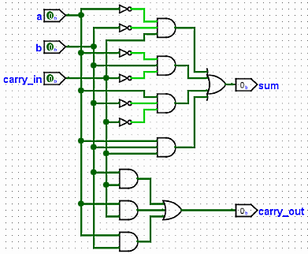
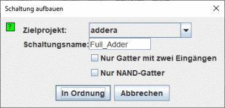

Erstellen einer Schaltung
Die Schaltfläche Schaltung aufbauen läßt Logisim eine Schaltung entwerfen, deren Gatter den aktuellen Ausdrücken der einzelnen Ausgänge entsprechen. Die Ein- und Ausgänge der Schaltung werden in derselben Reihenfolge erstellt und dargestellt, mit der diese in den Registerkarten für Ein- und Ausgänge festgelegt worden sind. Generell wird eine atraktive Schaltung aufgebaut werden, und tatsächlich ist eine Funktion des Kombinatorik-Moduls von Logisim, schlecht gezeichnete Schaltungsdiagramme zu verschönern. Aber, wie immer bei einer automatischen Formatierung, wird die aufgebaute Schaltung nicht die gleichen strukturellen Details aufweisen, wie eine von Menschenhand gezeichnete.

Wenn Sie auf die Schaltfläche Schaltung aufbauen klicken, erscheint ein Dialogfeld, in dem Sie wählen können, in welchem Projekt Sie die Schaltung platzieren möchten und welchen Namen Sie ihr geben möchten.

Wenn Sie den gleichen Namen wie eine bestehende Schaltung angeben, wird diese ersetzt. Logisim wird Sie bitten, zu bestätigen, dass Sie dies wirklich tun wollen.
Der "Make the Schaltung aufbauen enthält zwei selbsterklärende Optionen.
- Nur Gatter mit zwei Eingängen (Außer natürlich die NOT-Logik-Gatter).
- Nur NAND-Gatter
Sie können beide Optionen wählen, wenn Sie nur zweistufige NAND-Gatter verwenden möchten.
Logisim kann keine Schaltung ausschließlich aus NAND-Gattern aufbauen, die XOR-Terme enthält. Dieser Punkt ist daher deaktiviert, wenn die logischen Ausdrücke XOR-Verknüpfungen enthalten.
Weiter: Leitfaden für Benutzer von Logisim.